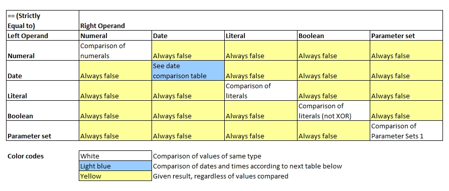
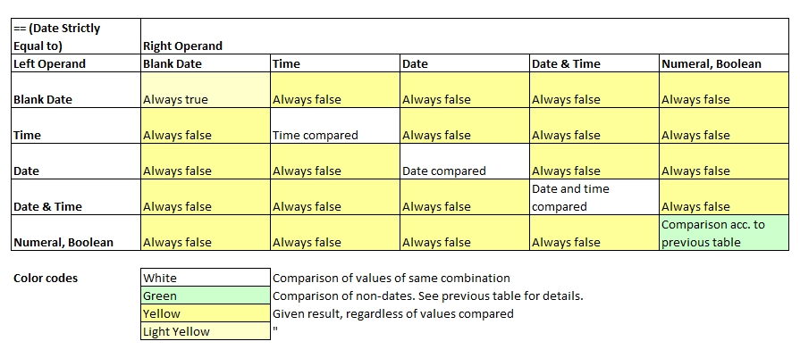

Introduction
Basic rules to strictly-equal-to comparisons:
- The number of operands on the right-hand-side is always 1. No risk of hijacking parameters.
- Contents are compared strictly, i.e. data type and contents must match perfectly. No wildcards are supported here.
- Comparing values of different types, e.g. numerals with strings, will always be unequal.
- When comparing sets, the same elements in both left and right hand side must exist, and they need to be in the same order.
- Comparing two void values will always return true.

1 Contents in both sets must be the same and in the same ordering E.g. {1,2,3} = {3,2,1} returns false.
echo("Basic comparisons:");
a[0] = 3 == 3; // true
a[1] = 5.1 == 5; // false
a[2] = {1,2,3} == {3,2,1}; // false
a[3] = {1,2,3} == {1,2,3}; // true
for all variables( a[], x[] ) echo( x[] );
echo("String with other types always return false:");
b[0] = 123 == "123"; // false
b[1] = '123' == 123; // false
b[2] = false == 'false'; // false
b[3] = date("2020-08-01") == "2020-08-01"; // false
for all variables( b[], x[] ) echo( x[] );Basic comparisons:
true
false
false
true
String with other types always return false:
false
false
false
false
Comparing Dates
Note that value of type date may assume 4 states: date only, time only, date and time combined and blank date (no value). Even for the same operator,
the rules of calculating dates and numeric operands differ.

d [] = date('2020-07-14');
dt[] = date('2020-07-14 12:30:00');
t [] = date('12:30:00');
o [] = date(''); // blank date
dz[] = date('2020-07-14 12:30:01');
a[0] = d[] != dt[]; // true (one contains time, the other not)
a[1] = t[] != dt[]; // true (one contains date, the other not)
a[2] = d[] != date("2020-07-15") - 1; // false
a[3] = dt[] != dz[]; // true (time differs)
for all variables( a[], b[] ) echo( b[] );
true
true
false
true